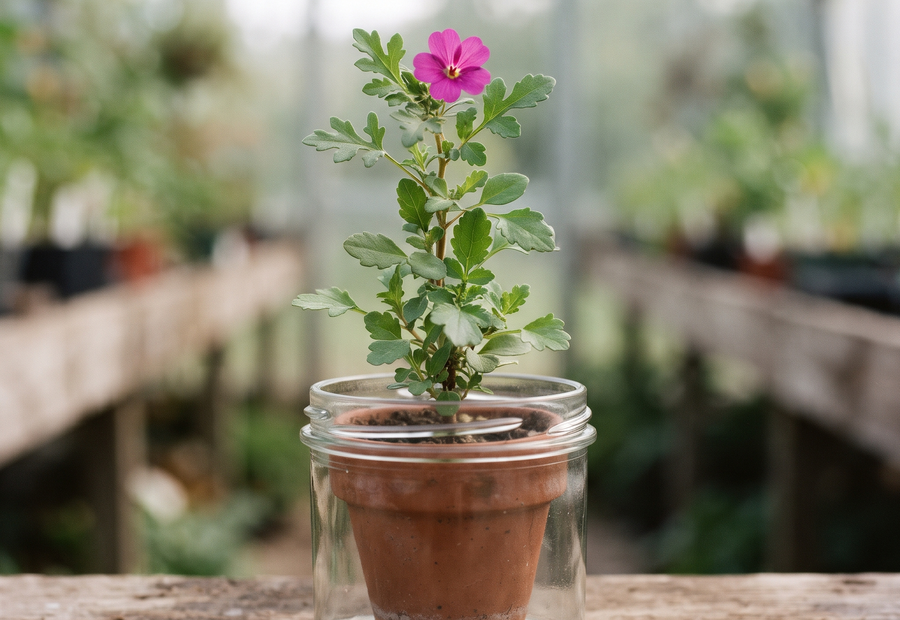
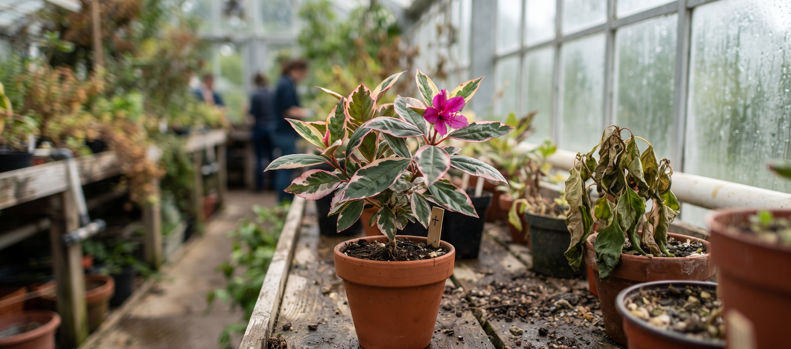
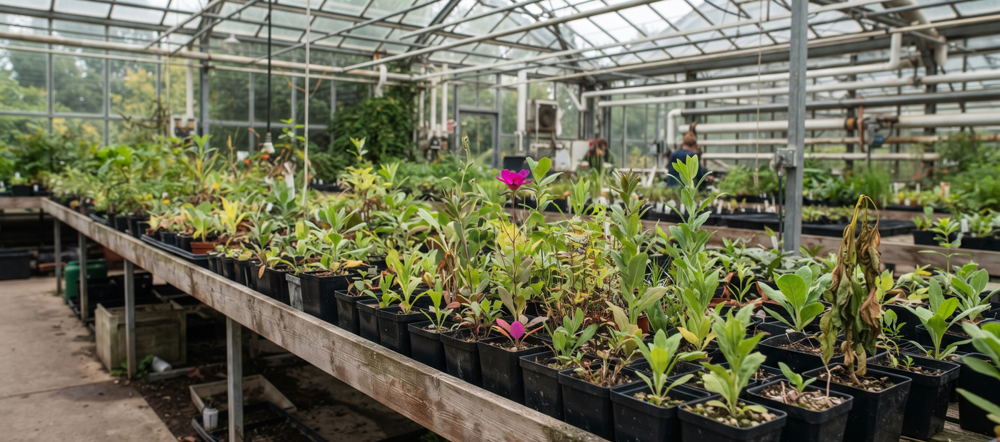

The Mutation Trial. Fuzzes a given file to test for parsing vulnerabilities in emulators: each iteration mutates the file at random, writes the variant out, and runs it through an emulator subprocess.

./arte-executable-header-fuzzer [params]
| Parameter | What it does |
|---|---|
-h | Show help message and exit. |
-e | Path to the emulator executable. Defaults to qemu-system-x86_64. |
-o | Directory to store the fuzzed files. Defaults to fuzzed_files. |
-i | Number of fuzzing iterations. Defaults to 10. |
-f | Percentage of bytes to fuzz (0.01 = 1%). Defaults to 0.01. |
--seed | Seed for the random number generator. If not provided, a random seed is used. |
